Empfehlungen

Hier ein paar Empfehlungen und viel wichtiger: die meisten Quellenangaben für meine Beiträge. Diese sind nicht geordnet.
In den meisten Browsern kann man mit der Tastenkombination Steuerung und F (STRG + F) ein Suchfeld öffnen, das dürfte
die Suche erleichtern. Ich werde versuchen jeweils genügend Stichpunkte auf Deutsch (ggf. auch auf Englisch) in die
Beschreibung zu packen.
Bei Vorschlägen, Fehlern usw. bitte eine E-Mail schicken! Die Adresse findet sich im Impressum.
1 inch = 2,54 cm
1 yard = ca. 91,44 cm
Links
Verein für historisches Handwerk und lebendige Geschichte e.V.
Sehr zu empfehlen. Bekannt vom Historischen Handwerkermarkt in Großerlach/Grab und anderen Veranstaltungen.
Nehelenia Patterns
Von hier habe ich das Buch "Wäschealbum 1880-1920". Man findet dort jedoch auch Schnittmuster für andere Epochen, Hutmacher Zubehör und Accessoires.
Bücher (digital)
Clothing for Women - Selection, Design, Construction; A Practical Manual for School and Home
[englisch, Buch, digital (print auffindbar)]
Autor: Laura Irene Baldt
(ISBN: 978-1-443732-09-3, Bilder sind nicht vorhanden)
Englisches Buch von damals. Beschreibt von Farbgebung, über Schnittmuster, wie viel (Betrag und Menge) in einer Garderobe vorhanden sein sollte bis
zu Schnittanleitungen (Fortgeschrittene oder gute Englisch Kenntnisse) alles.
The Dressmaker. A complete book on all matters connected with sewing and dressmaking from the simplest stitches to cutting, making, altering, mending and caring for the clothes.
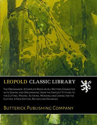
[englisch, Buch, print und digital]
Verlag: Leopold Class Library / Butterick Publishing Company
ISBN: ISBN: 978-1-527980-30-3
Beschreibung der historischen Techniken mit Bildern. Die verschiedenen Nähtechniken, Schneiden des Stoffes, erstellen des Kleidungsstückes,
anpassen der Kleidung und Schnittmuster, Stopfen von Löchern und die Pflege.
Alle Techniken mit Beschreibung und Fotos.
Bücher (gedruckt)
Mode Geschichten - Die Damenwelt des 19. Jahrhunderts
[deutsch, Buch, print]
Autor: Sonja Dusk
ISBN: 978-3-945424-73-5
Sehr gute Übersicht wie die damalige Kleidung aufgebaut war. Veranschaulicht auch sehr schön,
wie wichtig die richtige Unterwäsche ist.
Überischt der Lagen der Kleidung
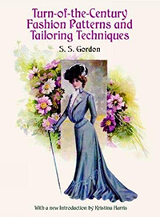
[englisch, Buch, print]
Autor: S. S. Gordon
ISBN: 978-0-486-41241-2
Für Fortgeschrittene. Methode des historischen Maßnehmens. Darauf basieren die Schnittmuster dann. Leider
fehlt eine genaue Beschreibung des Maßbandes. Hier eine schlechte Beschreibung (Bilder aus dem Buch benötigt):
bei der Null des langen Maßstabes ist ein Winkel und ein Maßband befestigt. In einem Video von Cathy Hay ist dieses
Buch und das richtige Werkzeug zur Messung mal sichtbar. Ich weiss nur nicht mehr welches.
Größentabelle (inch) für die perfekte Silhouette am Ende vom Buch.
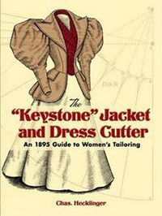
[englisch, Buch, print]
Autor: Cas. Hecklinger
ISBN: 978-0-486-45105-3
Für Fortgeschrittene. Schnittmuster mit den eigenen Maßen erstellen.
Illustrationen vom Delineator am Ende.
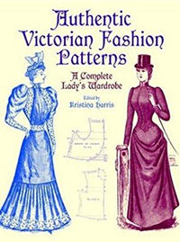
[englisch, Buch, print]
Edited by Kristina Harris
ISBN: 978-0-486-40721-0
Anfangs eine kurze Zusammenfassung wie Schnitte verwendet werden. Schnittmuster sind skaliert, man muss
diese Vergrößern und an die eigenen Maße anpassen.
Komplette Garderobe mit Illustrationen zu dem Schnittmuster.
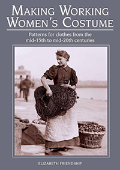
[englisch, Buch, print]
Autor: Elizabeth Friendship
ISBN: 978-3-945424-73-5
Mit Bildern für die einzelnen Kostüme und deren Schnittmuster dazu. Bisher noch nichts aus dem Buch gemacht aber
pro Kapitel bekommt man eine Zusammenfassung, Bildbeispiele und Welche Kleidungsstücke nötig sind. Schnittmuster
sind selber zu erstellen. Maßtabelle imperial (inch) und metric (cm). Kurze Zusammenfassung der benötigten Materialien
zum nähen und Schnittmuster erstellen. Auch einige Techniken werden kurz erklärt.
Maßtabellen in inch und cm. Für so viele Zeitepochen (je ein Kostüm) sehr gut zusammengestellt.
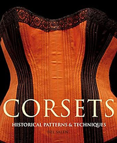
[englisch, Buch, print]
Autor: Jill Salem
ISBN: 978-1-906388-01-0
Verschiedene Korsetts. Ein großes Bild, ca. eine Seite Beschreibung zu dem Korsett und dann eine Skizze der Korsettteile.
Fortgeschrittene können diese Skizzen übertragen auf Ihre Maße und daraus ein Korsett erstellen
(auch hierfür Vorkenntnisse, da dieses nur kurz beschrieben wird.) Es gibt auch ein Puppenkorsett, insgesamt
25 Korsetts von 1750-1917.
Für Fortgeschrittene eine mögliche Anleitung für Korsetts und für alle eine gute Übersicht der Korsett Stile.
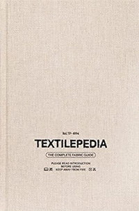
[englisch, Buch, print]
ISBN: 978-988-77110-9-4
Alles über Textilien. Name, kurze Beschreibung, Eigenschaften, häufig verwendet für und Variationen. Mit Bildern zu den
Textilien und verschiedene Herstellungsarten.
Textil Wikipedia bzw. Stoff Lexikon
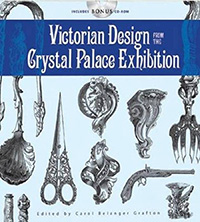
[englisch, Buch, print]
Autor: Sonja Dusk
ISBN: 978-0-486-47219-5
Englische Buch mit vielen Zeichnungen der Alltagsgegenstände aus der Viktorianischen Zeit. Diese sind am Ende
auch auf einer CD vorhanden.
Bilderlexikon einiger Alltagsgegenstände die im Crystal Palace ausgestellt wurden.
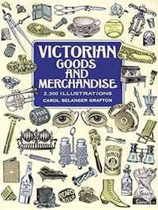
[englisch, Buch, print]
Autor: Carol Belanger Grafton
ISBN: 978-0-486-29698-2
Englische Buch mit vielen Zeichnungen der Alltagsgegenstände aus der Viktorianischen Zeit. Leider keine genaueren
Beschreibungen aber sehr gut als Bilderlexikon und zum Ideen Sammeln geeignet.
Bilderlexikon einiger Alltagsgegenstände ohne Beschreibung
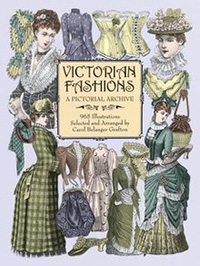
[englisch, Buch, print]
Selected and Arranged by Carol Belanger Grafton
ISBN: 978-0-486-40221-5
Englische Buch mit Zeichnungen von Frauenkleidung. Kleidungsstil von ca. 1855-1903. Accessoires usw. sind
teilweise auch abgebildet.
Bilderlexikon Frauenkleidung ca. 1855-1903
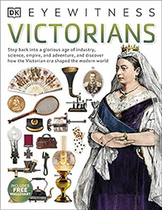
[englisch, Buch, print]
Autor: Sonja Dusk
ISBN: 978-0-2411-8759-3
Englische Buch mit Fotografien und Zeichnungen von Viktorianischen Gegenständen usw. Beschreibungen alle
auf Englisch mit einem Poster.
Fotos und Zeichnungen von Viktorianischen Gegenständen usw.
Zeitschriften (digital)
Delineator
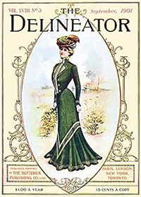
[englisch, Zeitschrift, digital]
Englische Zeitschrift aus dem 19. Jahrhundert. Viele Schnittmuster usw. Verschiedene Ausgaben im
Internet Archive verfügbar.
Der Bazar
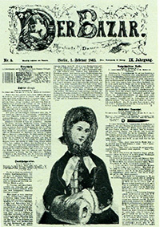
[deutsch, Zeitschrift, digital]
Englische Zeitschrift aus dem 19. Jahrhundert. Viele Schnittmuster usw. Verschiedene Ausgaben bei der
Uni Düsseldorf verfügbar. (Auch im internet Archive verfügbar).